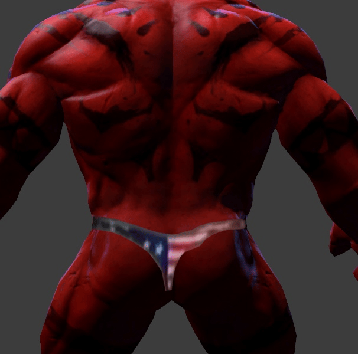

Axe

Скиллы
-
Скилл 1: Berserker's Call - Описание: Принуждает врагов атаковать Axe.
-
Скилл 2: Battle Hunger - Описание: Наносит урон врагу и замедляет его.
-
Скилл 3: Counter Helix - Описание: Наносит урон врагам при получении
удара.
-
Ультимейт: Culling Blade - Описание: Убивает врага с низким здоровьем.
Как играть
Стратегия игры за Axe: Играйте агрессивно, используйте Berserker's Call
для инициации боев и следите за позиционированием, чтобы максимизировать
урон от Counter Helix.
Назад к списку персонажей